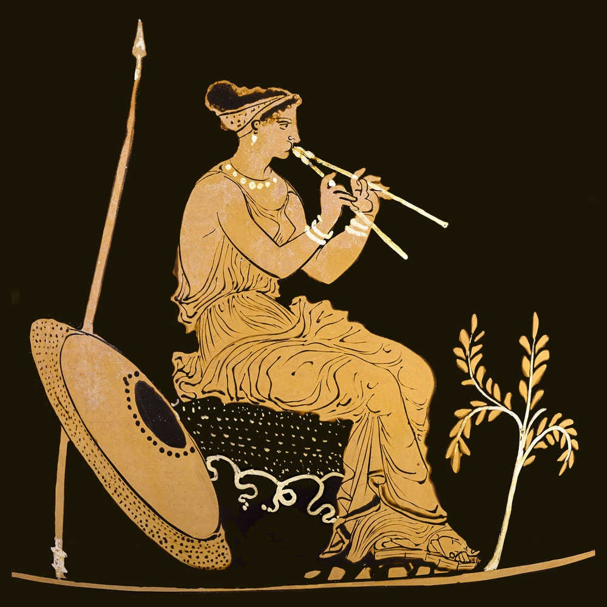
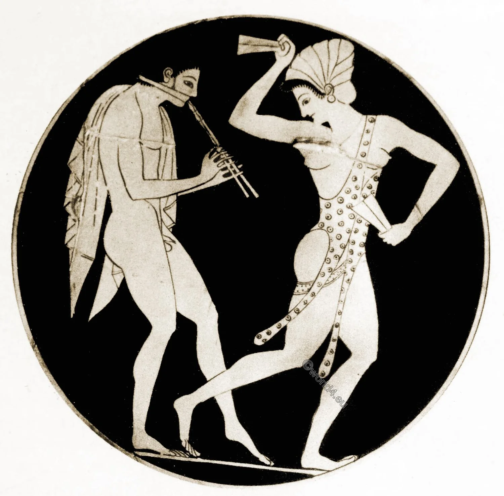
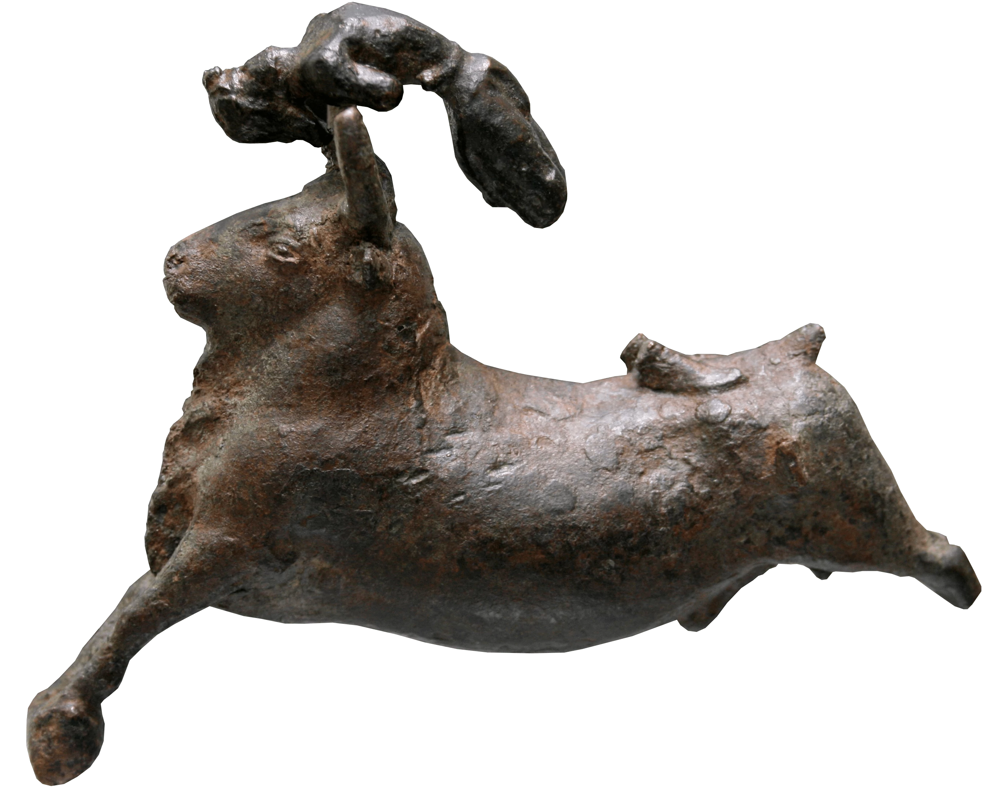

Entertainment was an important part of social, religious, and
community life in Bronze Age Greece. Although everyday life involved
a great deal of work, people also had opportunities to celebrate,
socialize, compete, and enjoy music and performances. Entertainment
was often connected to religious festivals, ceremonies, feasts, and
important community events. Archaeological discoveries, including
paintings, pottery, figurines, and musical instruments, provide
evidence of the different ways people entertained themselves. Music
and dance played an important role in celebrations and religious
activities. Bronze Age Greeks used instruments such as lyres,
flutes, pipes, rattles, and percussion instruments. Musicians could
perform during ceremonies, feasts, and other gatherings, while
people danced as part of celebrations or religious rituals. Frescoes
and other artwork from Minoan Crete show groups of people
participating in musical and dancing activities, suggesting that
these were important forms of entertainment.
Physical activities and competitions were another form of
entertainment in Bronze Age Greece. People took part in activities
that demonstrated strength, speed, balance, skill, and courage,
including wrestling, running, boxing, and archery. These activities
may have been practiced for recreation, training, competition, or
religious purposes. One of the most famous activities shown in
Bronze Age artwork is bull-leaping, particularly in Minoan Crete.
Paintings and other objects show figures performing acrobatic
movements over bulls, although historians continue to debate whether
this was a sport, a religious ritual, or a combination of both.
Physical competitions may also have been connected with festivals
and important gatherings, giving participants an opportunity to
demonstrate their abilities in front of their community.
Feasting was an important part of social, religious, and
community life in Bronze Age Greece. Large gatherings could bring
together families, community members, rulers, and guests to share
food and drink during festivals, ceremonies, religious occasions, or
important celebrations. Meals could include bread and grains, meat,
fish, olives, fruits, vegetables, cheese, wine, and other locally
available foods. Archaeological discoveries of large storage
vessels, cooking equipment, serving vessels, and decorated pottery
provide evidence of organized food preparation and communal meals.
Feasts were more than simply opportunities to eat; they could
strengthen relationships, mark important events, honor gods, and
demonstrate the wealth and status of powerful families or palace
communities. Music, dancing, religious rituals, and other forms of
entertainment could also take place during these gatherings, making
feasting an important part of Bronze Age social life.
Entertainment
Music, Dance, and Sports
Entertainment in the Bronze Age

Music
Music was an important part of religious, social, and ceremonial
life during the Bronze Age. Archaeological evidence from Minoan
Crete and Mycenaean Greece shows that people used several types of
instruments, including lyres, harps, flutes, pipes, rattles, and
percussion instruments. Some of the earliest known depictions of
musicians in the Aegean come from this period, including artwork
showing people playing instruments and performing alongside
dancers.
Music was likely used during religious ceremonies, festivals,
feasts, processions, and other community gatherings, where it
could
accompany singing and dancing. The famous Harpist Fresco from
Akrotiri and other Minoan artwork provide evidence of musicians
performing for audiences. Instruments were made from materials
such
as wood, bone, reeds, animal hide, and strings, although many
original instruments have not survived because these materials
decay
over time. Music could also have had ceremonial and religious
meanings, particularly when performed during rituals or in sacred
spaces. Although we cannot know exactly what Bronze Age music
sounded like because no musical recordings survive, the surviving
instruments, artwork, and archaeological evidence show that music
and musicians were an established part of Aegean society.

Dance
Dancing was an important part of religious, social, and ceremonial
life during the Bronze Age. Archaeological evidence, particularly
from Minoan Crete and the Aegean islands, shows people
participating in dances during festivals, religious ceremonies,
celebrations, and communal gatherings. Frescoes, pottery,
figurines, and seals depict groups of people with raised arms,
linked together, or moving in organized formations, suggesting
that dancing could be a shared group activity. Dance was often
accompanied by music and singing, with musicians playing
instruments such as lyres, flutes, and percussion instruments.
Some dances may have been performed as part of religious rituals
to honor gods or other supernatural forces, while others may
simply have been forms of entertainment during feasts and
celebrations. Dancing also appears to have provided a way for
communities to express joy, celebration, identity, and religious
devotion. Although we cannot reconstruct the exact movements of
most Bronze Age dances, the artwork and archaeological evidence
clearly show that dance was an important part of Aegean culture.

Sports
Physical activities and sports were an important part of life in
some Bronze Age Greek communities, providing opportunities to
develop strength, speed, agility, and physical skill.
Archaeological evidence from Minoan Crete and Mycenaean Greece
includes artwork, figurines, and objects depicting or possibly
associated with activities such as wrestling, boxing, running,
archery, and bull-leaping. Bull-leaping is particularly famous in
Minoan art, with frescoes and other representations showing people
performing acrobatic movements over bulls. It may have had
religious, ceremonial, or competitive purposes, although its exact
meaning remains uncertain. Boxing and wrestling are also
represented in Minoan artwork, including scenes of young figures
engaged in combat. Hunting and archery required physical ability
and could serve both practical and recreational purposes. Unlike
the later Olympic Games of ancient Greece, there is no evidence of
a single organized sporting festival like the Olympics during the
Bronze Age. Instead, physical activities appear to have been
connected to training, entertainment, religious ceremonies, social
gatherings, and displays of skill.